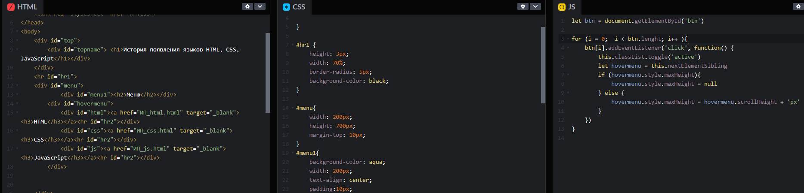

Фронтенд — все, что браузер может читать, выводить на экран и / или запускать. То есть это HTML, CSS и JavaScript.
HTML (HyperText Markup Language) говорит браузеру, каково содержание страницы, например, «заголовок», «параграф», «список», «элемент списка».
CSS (Cascading Style Sheets) говорит браузеру, как отображать элементы, например, «после первого параграфа отступ в 20 пикселей» или «весь текст в элементе body
должен быть темно-серым и написан шрифтом Verdana».
JavaScript говорит браузеру, как реагировать на некоторые взаимодействия, используя легкий язык программирования. Большинство сайтов на самом деле не используют много
JavaScript, но если вы нажмете на что-то и
содержимое страницы поменяется без белого мигания экрана, значит, где-то использовался JavaScript.